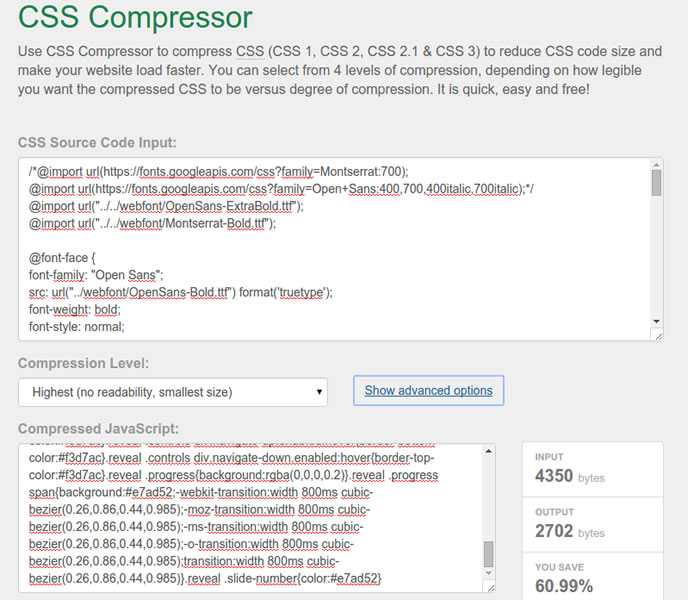

FRONTEND BABY STEPS
SOBRE
Blog: http://napalmdev.github.io
Github: https://github.com/napalmdev
Twitter: @napalmdev
Quem é o Desenvolvedor Frontend?
O que ele faz?
De quê se alimenta?
Opiniões Aleatórias
NÃO,
NÃO,
E NÃO...
O Desenvolvedor Frontend é quem implementa a experiência de uso de software com foco total no usuário.
Ele é o elo entre o usuário e a aplicação.
E quais tecnologias ele utiliza?
BASICAMENTE
Por que basicamente?
Gente, mas pra quê tudo isso?

Old CSS Workflow
Minificação de CSS
http://cssminifier.com
http://csscompressor.com

Neste modelo de Workflow a Performance era seriamente comprometida.
1 segundo a mais ou a menos não faz tanta diferença, faz?
Segundo esses caras, faz SIM.
Organização
X
Performance
=
Necessidade
PRÉ-PROCESSADORES
Features do Sass
- Variáveis
- Aninhamento de Seletores
- Herança
- Mixins
- Operações Matemáticas
- @Import e Minificação
Variáveis
sass - style.scss
$cor-primaria: #BADA55
$cor-secundaria: #333
$font-padrao: Arial,Helvetica
.botao{
font: 16px $font-padrao;
background:$cor-secundaria;
}
.container{
background:$cor-primaria;
}
css - style.css
.botao{
font: 16px Arial,Helvetica;
background: #333;
}
.container{
background: #BADA55;
}
Aninhamento
sass - style.scss
nav {
ul {
margin: 0;
padding: 0;
list-style: none;
}
li { display: inline-block; }
a {
display: block;
padding: 6px 12px;
text-decoration: none;
}
}
Aninhamento
css - style.css
nav ul {
margin: 0;
padding: 0;
list-style: none;
}
nav li {
display: inline-block;
}
nav a {
display: block;
padding: 6px 12px;
text-decoration: none;
}
Herança
sass - style.scss
.message {
border: 1px solid #ccc;
padding: 10px;
color: #333;
}
.success {
@extend .message;
border-color: green;
}
Herança
css - style.css
.message {
border: 1px solid #ccc;
padding: 10px;
color: #333;
}
.success {
border: 1px solid #ccc;
padding: 10px;
color: #333;
border-color: green;
}
Mixin
sass - style.scss
@mixin border-radius($radius) {
-webkit-border-radius: $radius;
-moz-border-radius: $radius;
-ms-border-radius: $radius;
border-radius: $radius;
}
.box { @include border-radius(10px); }
Mixin
css - style.css
.box {
-webkit-border-radius: 10px;
-moz-border-radius: 10px;
-ms-border-radius: 10px;
border-radius: 10px;
}
Mas como eu compilo?
Linha Mágica
sass --watch style.scss: style.css

A cereja do bolo do Sass
@import e Minificação de CSS
font.scss
$font-titulo: Arial, Helvetica, "Sans-serif";
$font-subtitulo: Verdana, Tahoma, Helvetica;
h1{
font-family:$font-titulo;
}
h2,h3,h4{
font-family:$font-subtitulo;
}
main.scss
@import "font";
*{
border:5px;
margin:0;
padding:0;
}
Após a compilação
sass --watch main.scss: style.css
style.css
h1 {
font-family: Arial, Helvetica, "Sans-serif"; }
h2, h3, h4 {
font-family: Verdana, Tahoma, Helvetica; }
* {
border: 5px;
margin: 0;
padding: 0; }
Após a minificação
sass --watch main.scss: style.css --style compressed
style.css
h1{font-family:Arial,Helvetica,"Sans-serif"}h2,h3,h4{font-family:Verdana,Tahoma,Helvetica}*{border:5px;margin:0;padding:0}